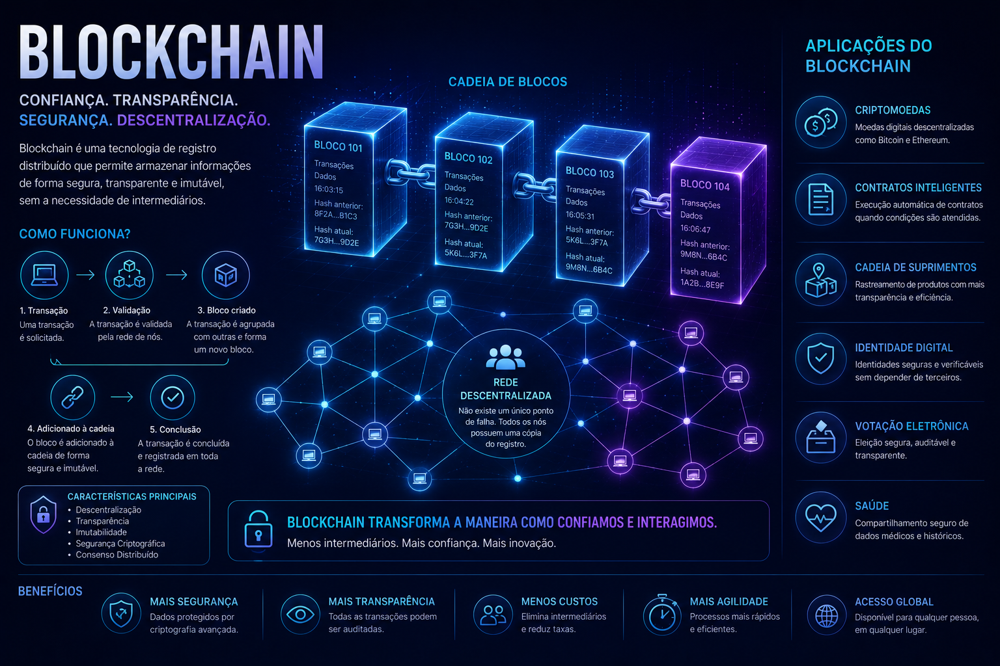
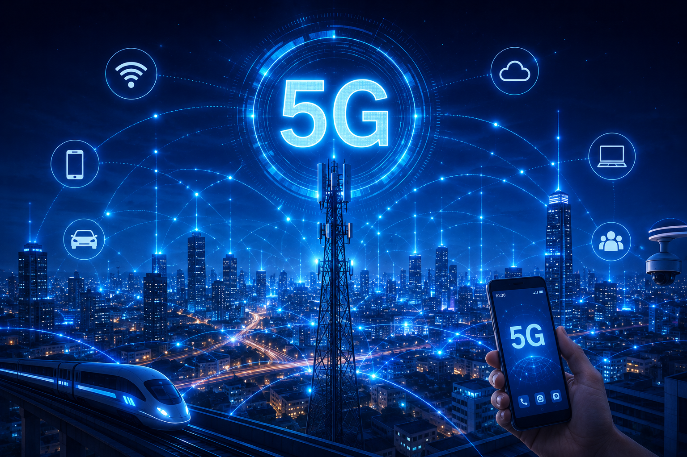
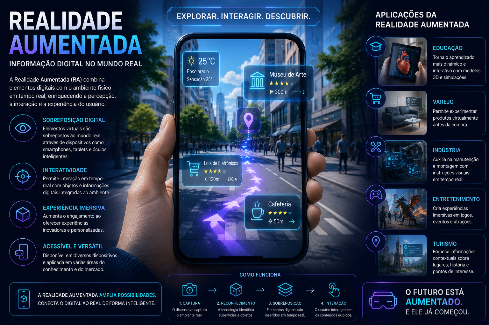

Bem-vindo à Feira de Tecnologia 2026
Conheça as principais tendências tecnológicas que estão transformando o mundo e moldando o futuro.
Inovação em IA

Explore as mais recentes inovações em Inteligência Artificial e suas aplicações em diversas áreas.
Realidade Virtual

Descubra como a Realidade Virtual está criando experiências imersivas para educação, entretenimento e treinamento.
Internet das Coisas

Conheça a Internet das Coisas (IoT) e veja como dispositivos inteligentes estão cada vez mais conectados.
Blockchain

Entenda como o Blockchain garante segurança, transparência e confiabilidade no armazenamento de dados.
5G

Saiba como a rede 5G oferece maior velocidade, menor latência e novas possibilidades de conexão.
Realidade Aumentada

Veja como a Realidade Aumentada combina elementos digitais com o mundo real para criar experiências inovadoras.